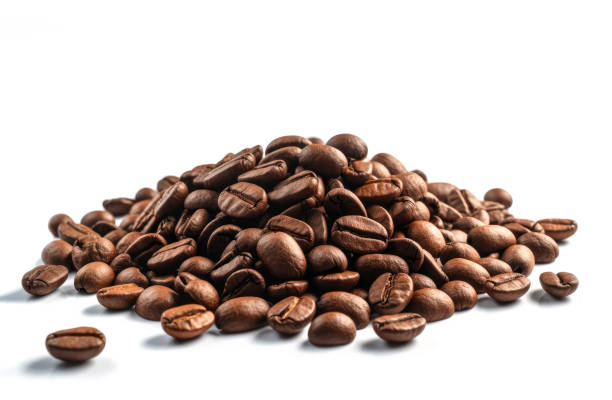
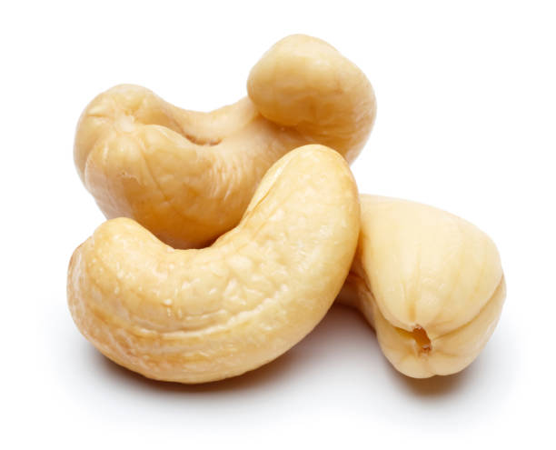
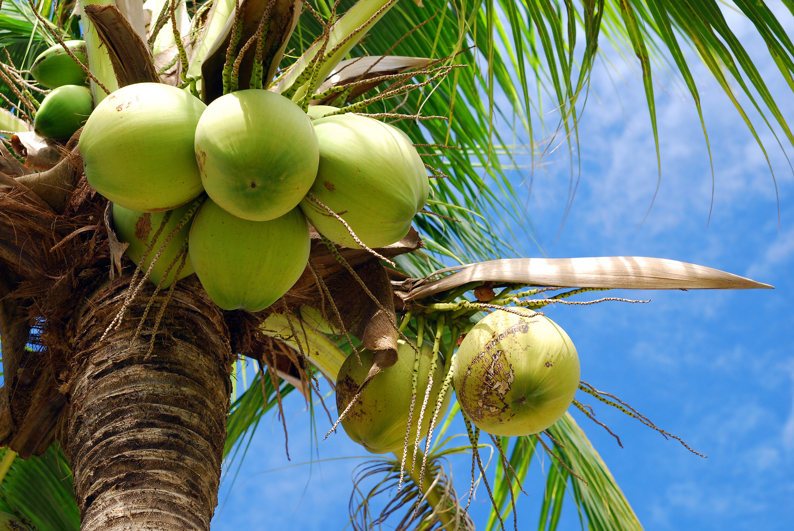
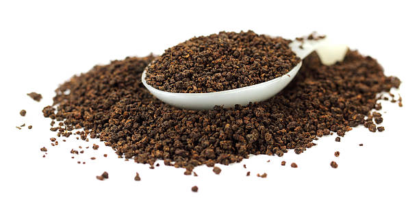
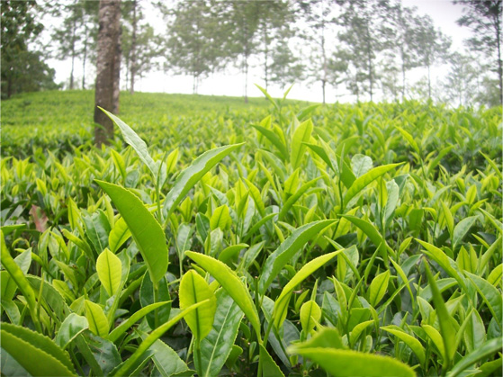
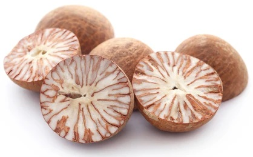
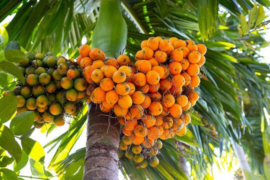
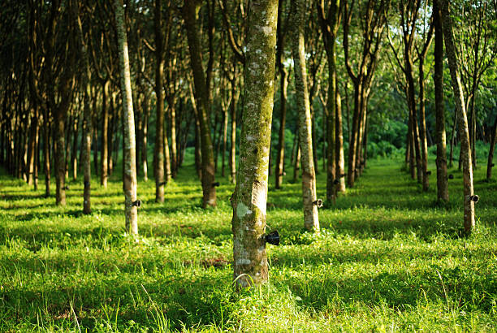
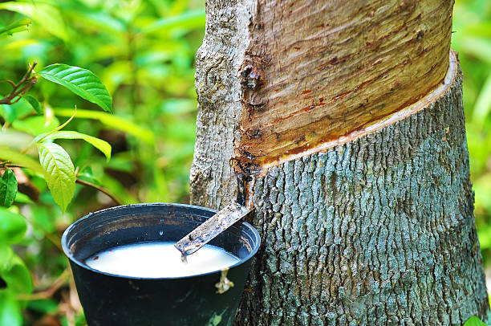
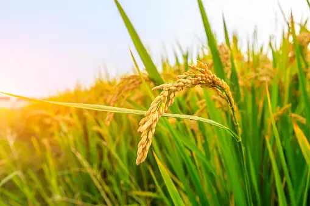

1. coffee / 1. കോഫി

Coffee cultivation in Kerala is a significant agricultural activity, particularly in the highland regions of the state. Kerala's coffee plantations benefit from the state's hilly terrain, ample rainfall, and suitable climatic conditions. Cultivation occurs year-round, with specific seasons for planting, pruning, flowering, and harvesting. Acidic soils with good drainage are preferred for coffee cultivation, allowing the coffee plants to thrive and produce high-quality beans. Kerala produces both Arabica and Robusta varieties of coffee, with Arabica being predominant in the higher elevations and Robusta in the lower altitudes. Kerala's coffee estates are known for their shade-grown and eco-friendly cultivation practices, preserving biodiversity and enhancing coffee quality. While Kerala's coffee consumption may not be as high compared to some other states, the state's coffee industry contributes to employment generation and economic development, particularly in regions like Wayanad and Idukki. Kerala's coffee products are sold across India, with notable consumption in states like Karnataka, Tamil Nadu, Maharashtra, and Gujarat. Additionally, Kerala's coffee plantations attract tourists, offering scenic landscapes and coffee tourism experiences.
കേരളത്തിലെ കാപ്പി കൃഷി ഒരു പ്രധാന കാർഷിക പ്രവർത്തനമാണ്, പ്രത്യേകിച്ച് സംസ്ഥാനത്തെ ഉയർന്ന പ്രദേശങ്ങളിൽ. കേരളത്തിലെ കാപ്പിത്തോട്ടങ്ങൾ സംസ്ഥാനത്തെ മലയോര ഭൂപ്രദേശം, മതിയായ മഴ, അനുയോജ്യമായ കാലാവസ്ഥ എന്നിവയിൽ നിന്ന് പ്രയോജനം നേടുന്നു. നടീൽ, അരിവാൾ, പൂവിടൽ, വിളവെടുപ്പ് എന്നിവയ്ക്കായി പ്രത്യേക സീസണുകൾക്കൊപ്പം വർഷം മുഴുവനും കൃഷി നടക്കുന്നു. നല്ല നീർവാർച്ചയുള്ള അസിഡിറ്റി ഉള്ള മണ്ണാണ് കാപ്പി കൃഷിക്ക് മുൻഗണന നൽകുന്നത്, കാപ്പി ചെടികൾ തഴച്ചുവളരാനും ഉയർന്ന നിലവാരമുള്ള ബീൻസ് ഉത്പാദിപ്പിക്കാനും അനുവദിക്കുന്നു. അറബിക്ക, റോബസ്റ്റ എന്നീ ഇനം കാപ്പികളാണ് കേരളം ഉത്പാദിപ്പിക്കുന്നത്, ഉയർന്ന പ്രദേശങ്ങളിൽ അറബിക്കയും താഴ്ന്ന പ്രദേശങ്ങളിൽ റോബസ്റ്റയുമാണ് പ്രധാനം. കേരളത്തിലെ കാപ്പിത്തോട്ടങ്ങൾ അവയുടെ തണലിൽ വളരുന്നതും പരിസ്ഥിതി സൗഹൃദവുമായ കൃഷിരീതികൾക്കും ജൈവവൈവിധ്യം സംരക്ഷിക്കുന്നതിനും കാപ്പിയുടെ ഗുണനിലവാരം വർധിപ്പിക്കുന്നതിനും പേരുകേട്ടതാണ്. മറ്റ് ചില സംസ്ഥാനങ്ങളെ അപേക്ഷിച്ച് കേരളത്തിലെ കാപ്പി ഉപഭോഗം ഉയർന്നതല്ലെങ്കിലും, സംസ്ഥാനത്തിൻ്റെ കാപ്പി വ്യവസായം തൊഴിലവസരങ്ങൾ സൃഷ്ടിക്കുന്നതിനും സാമ്പത്തിക വികസനത്തിനും സംഭാവന ചെയ്യുന്നു, പ്രത്യേകിച്ച് വയനാട്, ഇടുക്കി തുടങ്ങിയ പ്രദേശങ്ങളിൽ. കർണാടക, തമിഴ്നാട്, മഹാരാഷ്ട്ര, ഗുജറാത്ത് തുടങ്ങിയ സംസ്ഥാനങ്ങളിൽ കേരളത്തിൻ്റെ കാപ്പി ഉൽപന്നങ്ങൾ ഇന്ത്യയിലുടനീളം വിറ്റഴിക്കപ്പെടുന്നു. കൂടാതെ, കേരളത്തിലെ കാപ്പിത്തോട്ടങ്ങൾ വിനോദസഞ്ചാരികളെ ആകർഷിക്കുന്നു, മനോഹരമായ പ്രകൃതിദൃശ്യങ്ങളും കോഫി ടൂറിസം അനുഭവങ്ങളും വാഗ്ദാനം ചെയ്യുന്നു.
2. Cashew Nut / 2. കശുവണ്ടി


Cashew nut cultivation in Kerala is a notable agricultural activity, contributing to the state's agricultural diversity and economy. While Kerala may not be the largest producer of cashew nuts in India, cashew cultivation holds significance in meeting both local and export demands. Cultivation occurs throughout the year, with specific seasons for flowering and fruiting. Sandy loam soils, well-drained and rich in organic content, are preferred for cashew nut cultivation in Kerala. Adequate rainfall and sunshine during the growing season are essential for optimal nut development. Kerala cultivates various cashew nut varieties, with significant processing activities in districts like Kollam and Kannur. While cashew nuts are consumed locally, they are also processed and exported to states like Maharashtra, Karnataka, Tamil Nadu, Gujarat, and others with processing units. Cashew cultivation plays a crucial role in Kerala's agricultural landscape, providing employment opportunities and contributing to the state's economy.
കൃഷി: വർഷം മുഴുവനും
കേരളത്തിലെ കശുവണ്ടി കൃഷി ശ്രദ്ധേയമായ ഒരു കാർഷിക പ്രവർത്തനമാണ്, ഇത് സംസ്ഥാനത്തിൻ്റെ കാർഷിക വൈവിധ്യത്തിനും സമ്പദ്വ്യവസ്ഥയ്ക്കും സംഭാവന നൽകുന്നു. ഇന്ത്യയിൽ ഏറ്റവും കൂടുതൽ കശുവണ്ടി ഉത്പാദിപ്പിക്കുന്ന സംസ്ഥാനം കേരളം ആയിരിക്കില്ലെങ്കിലും, പ്രാദേശികവും കയറ്റുമതിയുമായ ആവശ്യങ്ങൾ നിറവേറ്റുന്നതിൽ കശുവണ്ടി കൃഷിക്ക് പ്രാധാന്യമുണ്ട്. വർഷം മുഴുവനും, പൂവിടുന്നതിനും കായ്ക്കുന്നതിനുമുള്ള പ്രത്യേക സീസണുകളോടെയാണ് കൃഷി നടക്കുന്നത്. നല്ല നീർവാർച്ചയുള്ളതും ജൈവാംശം കൂടുതലുള്ളതുമായ മണൽ കലർന്ന പശിമരാശി മണ്ണാണ് കേരളത്തിലെ കശുവണ്ടി കൃഷിക്ക് അഭികാമ്യം. വളരുന്ന സീസണിൽ മതിയായ മഴയും സൂര്യപ്രകാശവും നട്ട് വികസനത്തിന് അത്യന്താപേക്ഷിതമാണ്. കേരളം വിവിധ കശുവണ്ടി ഇനങ്ങൾ കൃഷി ചെയ്യുന്നു, കൊല്ലം, കണ്ണൂർ തുടങ്ങിയ ജില്ലകളിൽ കാര്യമായ സംസ്കരണ പ്രവർത്തനങ്ങൾ നടക്കുന്നു. കശുവണ്ടി പ്രാദേശികമായി ഉപയോഗിക്കുമ്പോൾ, അവ സംസ്കരിച്ച് മഹാരാഷ്ട്ര, കർണാടക, തമിഴ്നാട്, ഗുജറാത്ത് തുടങ്ങിയ സംസ്ഥാനങ്ങളിലേക്കും സംസ്കരണ യൂണിറ്റുകളുള്ള മറ്റു സംസ്ഥാനങ്ങളിലേക്കും കയറ്റുമതി ചെയ്യുന്നു. കേരളത്തിൻ്റെ കാർഷിക ഭൂപ്രകൃതിയിൽ കശുമാവ് കൃഷി നിർണായക പങ്ക് വഹിക്കുന്നു, തൊഴിലവസരങ്ങൾ പ്രദാനം ചെയ്യുന്നു, സംസ്ഥാനത്തിൻ്റെ സമ്പദ്വ്യവസ്ഥയ്ക്ക് സംഭാവന നൽകുന്നു.
3. Coconut / 3. നാളികേരം


Coconut cultivation in Kerala is a cornerstone of the state's agricultural sector, deeply rooted in its cultural and economic fabric. Kerala is renowned for its extensive coconut plantations, earning it the moniker "Land of Coconuts." Cultivation occurs year-round, with coconut trees thriving in the state's tropical climate. Sandy loam soils with good drainage are preferred for coconut cultivation, although the tree can adapt to various soil types. Coconut trees are perennial, providing a continuous supply of coconuts for various uses. Kerala produces a wide range of coconut products, including coconut oil, copra, coconut water, and desiccated coconut, catering to both local and export markets. While coconut products are consumed extensively within Kerala, they are also sold to neighboring states like Karnataka, Tamil Nadu, Andhra Pradesh, Maharashtra, and other coastal regions. Coconut cultivation plays a pivotal role in Kerala's agricultural economy, providing livelihoods to thousands of farmers and contributing to the state's socio-economic development
കൃഷി: വർഷം മുഴുവനും
സാംസ്കാരികവും സാമ്പത്തികവുമായ ഘടനയിൽ ആഴത്തിൽ വേരൂന്നിയ സംസ്ഥാനത്തിൻ്റെ കാർഷിക മേഖലയുടെ മൂലക്കല്ലാണ് കേരളത്തിലെ നാളികേര കൃഷി. വിസ്തൃതമായ തെങ്ങിൻ തോട്ടങ്ങൾക്ക് പേരുകേട്ടതാണ് കേരളം, "തെങ്ങുകളുടെ നാട്" എന്ന അപരനാമത്തിൽ കേരളം അറിയപ്പെടുന്നു. സംസ്ഥാനത്തിൻ്റെ ഉഷ്ണമേഖലാ കാലാവസ്ഥയിൽ തെങ്ങുകൾ തഴച്ചുവളരുന്നതിനാൽ വർഷം മുഴുവനും കൃഷി നടക്കുന്നു. നല്ല നീർവാർച്ചയുള്ള മണൽ കലർന്ന പശിമരാശി മണ്ണാണ് തെങ്ങ് കൃഷിക്ക് അഭികാമ്യം, എന്നിരുന്നാലും വൃക്ഷത്തിന് വിവിധ മണ്ണുമായി പൊരുത്തപ്പെടാൻ കഴിയും. തെങ്ങുകൾ വറ്റാത്തതാണ്, വിവിധ ആവശ്യങ്ങൾക്കായി തേങ്ങ തുടർച്ചയായി വിതരണം ചെയ്യുന്നു. വെളിച്ചെണ്ണ, കൊപ്ര, തേങ്ങാവെള്ളം, ഡെസിക്കേറ്റഡ് കോക്കനട്ട് എന്നിവയുൾപ്പെടെയുള്ള വിവിധതരം നാളികേര ഉൽപന്നങ്ങൾ കേരളം ഉൽപ്പാദിപ്പിക്കുന്നു, ഇത് പ്രാദേശികവും കയറ്റുമതിയും വിപണിയിൽ എത്തിക്കുന്നു. കേരളത്തിൽ നാളികേര ഉൽപന്നങ്ങൾ വ്യാപകമായി ഉപയോഗിക്കുമ്പോൾ, കർണാടക, തമിഴ്നാട്, ആന്ധ്രാപ്രദേശ്, മഹാരാഷ്ട്ര തുടങ്ങിയ അയൽ സംസ്ഥാനങ്ങളിലേക്കും മറ്റ് തീരപ്രദേശങ്ങളിലേക്കും അവ വിൽക്കുന്നു. കേരളത്തിൻ്റെ കാർഷിക സമ്പദ്വ്യവസ്ഥയിൽ നാളികേര കൃഷി ഒരു പ്രധാന പങ്ക് വഹിക്കുന്നു, ആയിരക്കണക്കിന് കർഷകർക്ക് ഉപജീവനമാർഗം നൽകുകയും സംസ്ഥാനത്തിൻ്റെ സാമൂഹിക-സാമ്പത്തിക വികസനത്തിന് സംഭാവന നൽകുകയും ചെയ്യുന്നു.
4. Tea / 4. ചായ


Tea cultivation in Kerala, although not as extensive as in some other states like Assam or Darjeeling, holds significance in the state's agricultural landscape. Kerala's tea plantations are predominantly located in the highland regions, benefiting from the state's hilly terrain and suitable climatic conditions. Cultivation occurs year-round, with specific seasons for planting, pruning, and harvesting. Acidic soils with good drainage are preferred for tea cultivation, allowing the tea bushes to thrive and produce high-quality leaves. Kerala produces various types of tea, including black tea, green tea, and specialty teas, catering to both domestic and international markets. While tea consumption is not as high in Kerala compared to some northern states, the state's tea industry contributes to employment generation and economic development, particularly in regions like Munnar and Wayanad. Kerala's tea products are sold across India, with notable consumption in states like West Bengal, Assam, Karnataka, and Maharashtra. Additionally, Kerala's tea estates attract tourists, offering insights into tea cultivation and processing through plantation tours and tea tasting experiences.
കേരളത്തിലെ തേയില കൃഷി, അസം അല്ലെങ്കിൽ ഡാർജിലിംഗ് പോലെയുള്ള മറ്റ് ചില സംസ്ഥാനങ്ങളിലെ പോലെ വ്യാപകമല്ലെങ്കിലും, സംസ്ഥാനത്തിൻ്റെ കാർഷിക ഭൂപ്രകൃതിയിൽ പ്രാധാന്യമുണ്ട്. കേരളത്തിലെ തേയിലത്തോട്ടങ്ങൾ പ്രധാനമായും ഉയർന്ന പ്രദേശങ്ങളിലാണ് സ്ഥിതി ചെയ്യുന്നത്, സംസ്ഥാനത്തിൻ്റെ മലയോര ഭൂപ്രദേശവും അനുയോജ്യമായ കാലാവസ്ഥയും പ്രയോജനപ്പെടുത്തുന്നു. നടീൽ, അരിവാൾ, വിളവെടുപ്പ് എന്നിവയ്ക്കായി പ്രത്യേക സീസണുകൾക്കൊപ്പം വർഷം മുഴുവനും കൃഷി നടക്കുന്നു. നല്ല നീർവാർച്ചയുള്ള അസിഡിറ്റി ഉള്ള മണ്ണാണ് തേയില കൃഷിക്ക് അഭികാമ്യം, ഇത് തേയില കുറ്റിക്കാടുകൾ തഴച്ചുവളരാനും ഉയർന്ന നിലവാരമുള്ള ഇലകൾ ഉത്പാദിപ്പിക്കാനും അനുവദിക്കുന്നു. ബ്ലാക്ക് ടീ, ഗ്രീൻ ടീ, സ്പെഷ്യാലിറ്റി ടീ എന്നിവയുൾപ്പെടെ വിവിധ തരം തേയിലകൾ ആഭ്യന്തര, അന്തർദേശീയ വിപണികൾക്കായി കേരളം ഉത്പാദിപ്പിക്കുന്നു. ചില ഉത്തരേന്ത്യൻ സംസ്ഥാനങ്ങളെ അപേക്ഷിച്ച് കേരളത്തിൽ തേയില ഉപഭോഗം ഉയർന്നതല്ലെങ്കിലും, സംസ്ഥാനത്തെ തേയില വ്യവസായം തൊഴിലവസരങ്ങൾ സൃഷ്ടിക്കുന്നതിനും സാമ്പത്തിക വികസനത്തിനും സംഭാവന ചെയ്യുന്നു, പ്രത്യേകിച്ച് മൂന്നാർ, വയനാട് തുടങ്ങിയ പ്രദേശങ്ങളിൽ. പശ്ചിമ ബംഗാൾ, അസം, കർണാടക, മഹാരാഷ്ട്ര തുടങ്ങിയ സംസ്ഥാനങ്ങളിൽ ശ്രദ്ധേയമായ ഉപഭോഗം ഉള്ള കേരളത്തിലെ തേയില ഉൽപന്നങ്ങൾ ഇന്ത്യയിലുടനീളം വിൽക്കുന്നു. കൂടാതെ, കേരളത്തിലെ തേയിലത്തോട്ടങ്ങൾ വിനോദസഞ്ചാരികളെ ആകർഷിക്കുന്നു, തോട്ടം ടൂറുകളിലൂടെയും തേയിലയുടെ രുചി അനുഭവങ്ങളിലൂടെയും തേയില കൃഷിയെയും സംസ്കരണത്തെയും കുറിച്ചുള്ള ഉൾക്കാഴ്ചകൾ വാഗ്ദാനം ചെയ്യുന്നു.
5. Arecanut / 5. അരിക്കാനാട്ട്


Arecanut cultivation, also known as betel nut or supari, is a significant agricultural activity in Kerala, contributing to the state's agricultural diversity and economy. Kerala's arecanut plantations are primarily located in the southern districts, benefiting from the region's suitable climate and soil conditions. Cultivation occurs year-round, with specific seasons for planting, nurturing, and harvesting. Sandy loam soils with good drainage are preferred for arecanut cultivation, allowing the palms to thrive and produce high-quality nuts. Arecanut cultivation is often intercropped with other crops such as coconut or spices to optimize land use and maximize yield. Kerala produces various grades of arecanut, catering to both local consumption and export markets. While arecanut consumption is prevalent in Kerala and neighboring states, Kerala's arecanut products are also sold to states like Karnataka, Tamil Nadu, Andhra Pradesh, and Maharashtra. Arecanut cultivation plays a vital role in Kerala's agricultural landscape, providing livelihoods to farmers and supporting rural economies.
വെറ്റില അല്ലെങ്കിൽ സുപാരി എന്നും അറിയപ്പെടുന്ന അരിക്കാട്ട് കൃഷി കേരളത്തിലെ ഒരു പ്രധാന കാർഷിക പ്രവർത്തനമാണ്, ഇത് സംസ്ഥാനത്തിൻ്റെ കാർഷിക വൈവിധ്യത്തിനും സമ്പദ്വ്യവസ്ഥയ്ക്കും സംഭാവന നൽകുന്നു. കേരളത്തിലെ അങ്കണത്തോട്ടങ്ങൾ പ്രാഥമികമായി തെക്കൻ ജില്ലകളിലാണ് സ്ഥിതി ചെയ്യുന്നത്, പ്രദേശത്തിൻ്റെ അനുയോജ്യമായ കാലാവസ്ഥയും മണ്ണിൻ്റെ അവസ്ഥയും പ്രയോജനപ്പെടുത്തുന്നു. നടീൽ, പരിപോഷിപ്പിക്കൽ, വിളവെടുപ്പ് എന്നിവയ്ക്കായി പ്രത്യേക സീസണുകൾക്കൊപ്പം വർഷം മുഴുവനും കൃഷി നടക്കുന്നു. നല്ല നീർവാർച്ചയുള്ള മണൽ കലർന്ന പശിമരാശി മണ്ണാണ് അർക്കകൃഷിക്ക് അഭികാമ്യം, ഇത് ഈന്തപ്പനകൾ തഴച്ചുവളരാനും ഉയർന്ന നിലവാരമുള്ള കായ്കൾ ഉത്പാദിപ്പിക്കാനും അനുവദിക്കുന്നു. ഭൂവിനിയോഗം ഒപ്റ്റിമൈസ് ചെയ്യുന്നതിനും പരമാവധി വിളവ് ലഭിക്കുന്നതിനുമായി തെങ്ങോ സുഗന്ധവ്യഞ്ജനങ്ങളോ പോലുള്ള മറ്റ് വിളകളുമായി ഇടവിളയായി അരിക്കാട്ട് കൃഷി ചെയ്യാറുണ്ട്. പ്രാദേശിക ഉപഭോഗവും കയറ്റുമതി വിപണിയും ഒരുപോലെ പ്രയോജനപ്പെടുത്തുന്ന വിവിധ ഗ്രേഡുകളിലുള്ള അക്കനാക്ക് കേരളം ഉത്പാദിപ്പിക്കുന്നു. കേരളത്തിലും അയൽ സംസ്ഥാനങ്ങളിലും അക്കനാരു ഉപഭോഗം വ്യാപകമാണെങ്കിലും, കർണാടക, തമിഴ്നാട്, ആന്ധ്രാപ്രദേശ്, മഹാരാഷ്ട്ര തുടങ്ങിയ സംസ്ഥാനങ്ങളിലേക്കും കേരളത്തിലെ കായ ഉൽപ്പന്നങ്ങൾ വിൽക്കുന്നു. കർഷകർക്ക് ഉപജീവനമാർഗം നൽകുകയും ഗ്രാമീണ സമ്പദ്വ്യവസ്ഥയെ പിന്തുണയ്ക്കുകയും ചെയ്യുന്ന കേരളത്തിൻ്റെ കാർഷിക ഭൂപ്രകൃതിയിൽ അരിക്കാട്ട് കൃഷി ഒരു പ്രധാന പങ്ക് വഹിക്കുന്നു.
6. Rubber / 6. റബ്ബർ


Rubber cultivation in Kerala is a significant agricultural activity, making the state one of the leading rubber-producing regions in India. Kerala's rubber plantations thrive in the state's tropical climate, with abundant rainfall and suitable soil conditions. Cultivation occurs year-round, with specific seasons for tapping, latex collection, and processing. Laterite soils with good drainage are preferred for rubber cultivation, allowing the rubber trees to thrive and produce high-quality latex. Kerala primarily cultivates Hevea brasiliensis, the species commonly used for commercial rubber production. Rubber tapping, the process of extracting latex from rubber trees, is a labor-intensive activity that provides employment opportunities to many in Kerala's rural areas. Kerala's rubber industry plays a crucial role in the state's economy, contributing significantly to both domestic consumption and export markets. While Kerala consumes a considerable portion of the rubber it produces, surplus rubber is sold to various states in India, including Karnataka, Tamil Nadu, Maharashtra, Gujarat, and others with rubber processing units. Additionally, Kerala's rubber plantations attract tourists, offering insights into rubber tapping techniques and rubber processing.
കേരളത്തിലെ റബ്ബർ കൃഷി ഒരു പ്രധാന കാർഷിക പ്രവർത്തനമാണ്, ഇത് സംസ്ഥാനത്തെ ഇന്ത്യയിലെ റബ്ബർ ഉൽപ്പാദിപ്പിക്കുന്ന പ്രദേശങ്ങളിൽ ഒന്നാക്കി മാറ്റുന്നു. സമൃദ്ധമായ മഴയും അനുയോജ്യമായ മണ്ണും ഉള്ള സംസ്ഥാനത്തെ ഉഷ്ണമേഖലാ കാലാവസ്ഥയിലാണ് കേരളത്തിലെ റബ്ബർ തോട്ടങ്ങൾ തഴച്ചുവളരുന്നത്. ടാപ്പിംഗ്, ലാറ്റക്സ് ശേഖരണം, സംസ്കരണം എന്നിവയ്ക്കായി പ്രത്യേക സീസണുകൾക്കൊപ്പം വർഷം മുഴുവനും കൃഷി നടക്കുന്നു. റബ്ബർ കൃഷിക്ക് നല്ല നീർവാർച്ചയുള്ള ലാറ്ററൈറ്റ് മണ്ണാണ് അഭികാമ്യം, ഇത് റബ്ബർ മരങ്ങൾ തഴച്ചുവളരാനും ഉയർന്ന നിലവാരമുള്ള ലാറ്റക്സ് ഉത്പാദിപ്പിക്കാനും അനുവദിക്കുന്നു. വ്യാവസായിക റബ്ബർ ഉൽപാദനത്തിന് സാധാരണയായി ഉപയോഗിക്കുന്ന ഇനമായ ഹെവിയ ബ്രാസിലിയൻസിസാണ് കേരളം പ്രാഥമികമായി കൃഷി ചെയ്യുന്നത്. റബ്ബർ ടാപ്പിംഗ്, റബ്ബർ മരങ്ങളിൽ നിന്ന് ലാറ്റക്സ് വേർതിരിച്ചെടുക്കുന്ന പ്രക്രിയ, കേരളത്തിലെ ഗ്രാമപ്രദേശങ്ങളിൽ നിരവധി പേർക്ക് തൊഴിലവസരങ്ങൾ നൽകുന്ന ഒരു അധ്വാന-തീവ്രമായ പ്രവർത്തനമാണ്. കേരളത്തിൻ്റെ റബ്ബർ വ്യവസായം സംസ്ഥാനത്തിൻ്റെ സമ്പദ്വ്യവസ്ഥയിൽ നിർണായക പങ്ക് വഹിക്കുന്നു, ആഭ്യന്തര ഉപഭോഗത്തിലും കയറ്റുമതി വിപണിയിലും ഗണ്യമായ സംഭാവന നൽകുന്നു. കേരളം ഉൽപ്പാദിപ്പിക്കുന്ന റബ്ബറിൻ്റെ ഗണ്യമായ ഒരു ഭാഗം ഉപയോഗിക്കുമ്പോൾ, മിച്ചമുള്ള റബ്ബർ കർണാടക, തമിഴ്നാട്, മഹാരാഷ്ട്ര, ഗുജറാത്ത് എന്നിവയുൾപ്പെടെ ഇന്ത്യയിലെ വിവിധ സംസ്ഥാനങ്ങളിലേക്കും റബ്ബർ സംസ്കരണ യൂണിറ്റുകളുള്ള മറ്റുള്ളവയിലേക്കും വിൽക്കുന്നു. കൂടാതെ, കേരളത്തിലെ റബ്ബർ തോട്ടങ്ങൾ വിനോദസഞ്ചാരികളെ ആകർഷിക്കുന്നു, റബ്ബർ ടാപ്പിംഗ് സാങ്കേതികതകളെക്കുറിച്ചും റബ്ബർ സംസ്കരണത്തെക്കുറിച്ചും ഉള്ള ഉൾക്കാഴ്ചകൾ വാഗ്ദാനം ചെയ്യുന്നു.
7. RICE / 7. അരി


Rice cultivation in Kerala is a significant agricultural activity, although the state is not among the major rice-producing states
in India. Rice holds a vital place in Kerala's agricultural landscape, primarily catering to local demand. Cultivation occurs throughout the year,
with the main seasons being the Kharif season (June to October) and the Rabi season (November to March), with the monsoon season particularly conducive
to rice cultivation. Well-drained loamy soils are preferred for rice cultivation, although different varieties can adapt to varying soil types. Kerala cultivates
various rice varieties, both traditional and modern high-yielding types, including Jeerakasala, Pokkali, Jyothi, and Uma. While Kerala consumes a significant portion
of the rice it produces, there may be surplus rice sold to neighboring states during times of abundance. However, Kerala's rice exports are not as notable compared to states
like Punjab or Andhra Pradesh. Overall, rice cultivation in Kerala contributes to local food security and agricultural diversity, playing a crucial role in the state's economy.
കേരളത്തിലെ നെൽകൃഷി ഒരു പ്രധാന കാർഷിക പ്രവർത്തനമാണ്, എന്നിരുന്നാലും സംസ്ഥാനം പ്രധാന നെല്ല് ഉൽപ്പാദിപ്പിക്കുന്ന സംസ്ഥാനങ്ങളിൽ ഒന്നല്ല
ഇന്ത്യയിൽ. കേരളത്തിൻ്റെ കാർഷിക ഭൂപ്രകൃതിയിൽ അരിക്ക് ഒരു സുപ്രധാന സ്ഥാനമുണ്ട്, പ്രാഥമികമായി പ്രാദേശിക ആവശ്യങ്ങൾ നിറവേറ്റുന്നു. കൃഷി വർഷം മുഴുവനും നടക്കുന്നു,
പ്രധാന സീസണുകൾ ഖാരിഫ് സീസണും (ജൂൺ മുതൽ ഒക്ടോബർ വരെ) റാബി സീസണും (നവംബർ മുതൽ മാർച്ച് വരെ) മഴക്കാലം പ്രത്യേകിച്ചും അനുകൂലമാണ്.
നെൽകൃഷിയിലേക്ക്. നെൽകൃഷിക്ക് നല്ല നീർവാർച്ചയുള്ള പശിമരാശി മണ്ണാണ് അഭികാമ്യം, എന്നിരുന്നാലും വ്യത്യസ്ത ഇനങ്ങൾക്ക് വ്യത്യസ്ത മണ്ണുമായി പൊരുത്തപ്പെടാൻ കഴിയും. കേരളം കൃഷി ചെയ്യുന്നു
ജീരകശാല, പൊക്കാളി, ജ്യോതി, ഉമ എന്നിവയുൾപ്പെടെ പരമ്പരാഗതവും ആധുനികവുമായ ഉയർന്ന വിളവ് തരുന്ന വിവിധതരം അരികൾ. കേരളം ഒരു പ്രധാന ഭാഗം ഉപയോഗിക്കുന്നു
അത് ഉൽപ്പാദിപ്പിക്കുന്ന അരിയിൽ, സമൃദ്ധമായ സമയത്ത് അയൽ സംസ്ഥാനങ്ങൾക്ക് വിൽക്കുന്ന അരി മിച്ചമുണ്ടാകാം. എന്നാൽ, സംസ്ഥാനങ്ങളെ അപേക്ഷിച്ച് കേരളത്തിലെ അരി കയറ്റുമതി അത്ര ശ്രദ്ധേയമല്ല
പഞ്ചാബ് അല്ലെങ്കിൽ ആന്ധ്രാപ്രദേശ് പോലെ. മൊത്തത്തിൽ, കേരളത്തിലെ നെൽകൃഷി പ്രാദേശിക ഭക്ഷ്യസുരക്ഷയ്ക്കും കാർഷിക വൈവിധ്യത്തിനും സംഭാവന നൽകുന്നു, സംസ്ഥാനത്തിൻ്റെ സമ്പദ്വ്യവസ്ഥയിൽ നിർണായക പങ്ക് വഹിക്കുന്നു.